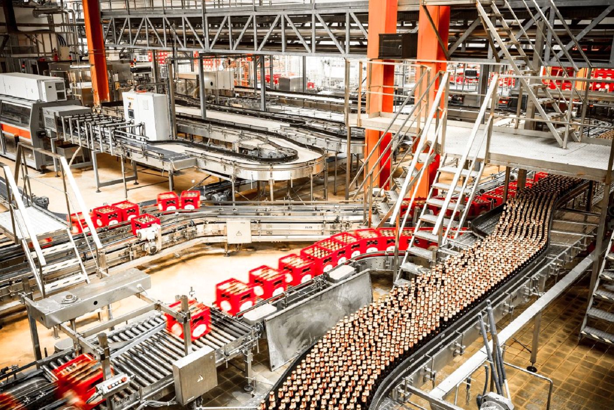

Industrias alimenticias pelo mundo
Conheça um pouco sobre as indústrias mais conhecidas do mundo
As centenas de marcas que encontramos nas prateleiras dos supermercados nos dão a impressão de que ao comprarmos, nosso dinheiro vai para muitas empresas diferentes. Entretanto, não é bem assim que ocorre.
A inflação crescente manteve a indústria de alimentos e bebidas com preços em alta em todo o mundo. No ano passado, as 25 maiores empresas deste setor geraram US$ 1,5 trilhão (cerca de R$ 7,6 trilhões) em receita, enquanto os lucros da indústria aumentaram para mais de US$ 155 bilhões (R$ 796 bilhões)
Em um relatório de 2013 foi trazido as 10 maiores e mais influentes empresas do mundo de alimentos e bebidas, algumas delas são a Nestlé, Unilever, PepsiCo, Coca-Cola e Mondelez. Essas corporações são tão poderosas que as suas políticas podem ter um grande impacto sobre as dietas e condições de trabalho das pessoas no mundo, bem como sobre o meio ambiente.
"A maior parte do dinheiro que consumimos na alimentação acaba por ser coletado por grandes corporações estrangeiras, mesmo que não saibamos"Como se pode observar, há um pequeno número de empresas que detém grande parte do mercado alimentício e praticamente dominam a nossa alimentação.